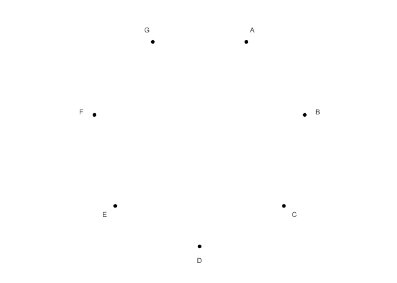
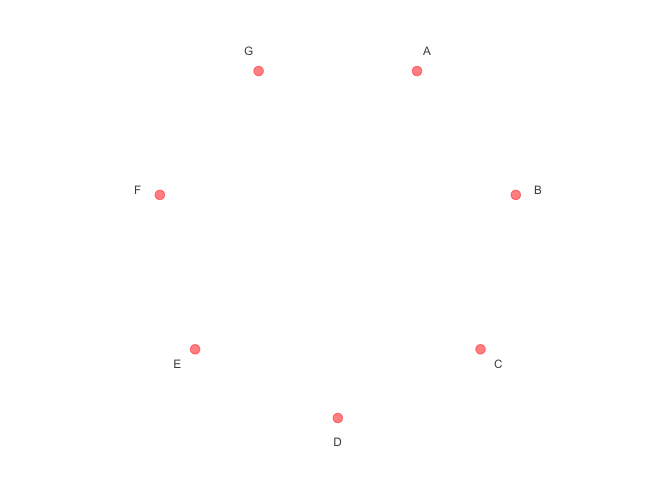
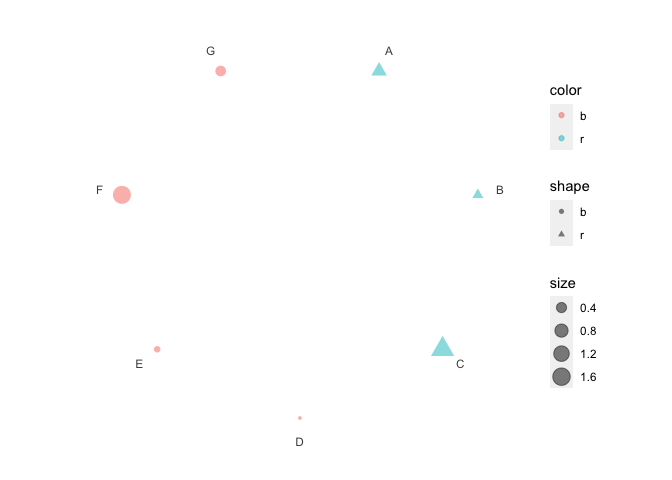
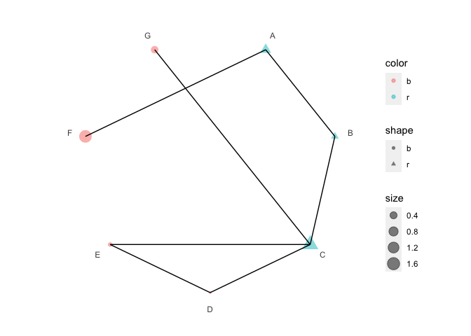
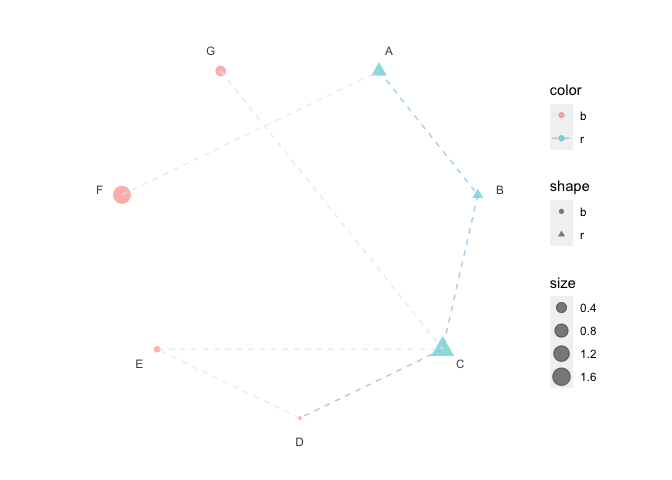
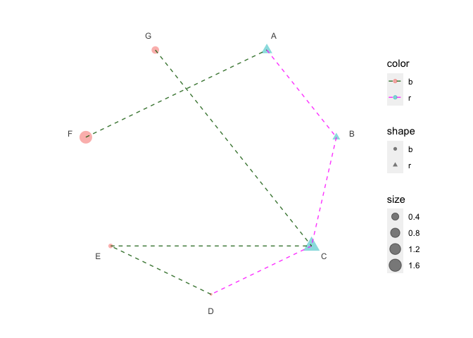

ggpolar provides a very flexible way to create dots in coordinate system for event list and connect the dots with segments based on {ggplot2}.
Installation
You can install the released version of ggpolar from CRAN with:
install.packages("ggpolar")You can install the development version of ggpolar from GitHub with:
remotes::install_github("ShixiangWang/polar")Example
Init a polar plot
library(ggpolar)
#> Loading required package: ggplot2
data <- data.frame(x = LETTERS[1:7])
p1 <- polar_init(data, x = x)
p1
# Set aes value
p2 <- polar_init(data, x = x, size = 3, color = "red", alpha = 0.5)
p2
# Set aes mapping
set.seed(123L)
data1 <- data.frame(
x = LETTERS[1:7],
shape = c("r", "r", "r", "b", "b", "b", "b"),
color = c("r", "r", "r", "b", "b", "b", "b"),
size = abs(rnorm(7))
)
# Check https://ggplot2.tidyverse.org/reference/geom_point.html
# for how to use both stroke and color
p3 <- polar_init(data1, x = x, aes(size = size, color = color, shape = shape), alpha = 0.5)
p3
Connect polar dots
data2 <- data.frame(
x1 = LETTERS[1:7],
x2 = c("B", "C", "D", "E", "C", "A", "C"),
color = c("r", "r", "r", "b", "b", "b", "b")
)
p4 <- p3 + polar_connect(data2, x1, x2)
p4
# Unlike polar_init, mappings don't need to be included in aes()
p5 <- p3 + polar_connect(data2, x1, x2, color = color, alpha = 0.8, linetype = 2)
p5
# Use two different color scales
if (requireNamespace("ggnewscale")) {
library(ggnewscale)
p6 = p3 +
new_scale("color") +
polar_connect(data2, x1, x2, color = color, alpha = 0.8, linetype = 2)
print(p6 + scale_color_brewer())
print(p6 + scale_color_manual(values = c("darkgreen", "magenta")))
}
#> Loading required namespace: ggnewscale
Citation
If you use ggpolar in academic research, please cite the following paper along with the GitHub repo.
Antigen presentation and tumor immunogenicity in cancer immunotherapy response prediction, eLife. https://doi.org/10.7554/eLife.49020.